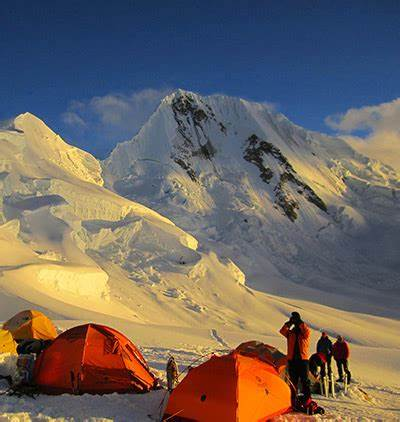

Actividades que podrás realizar en el Tour
El Nevado Huascarán es un patrimonia nacional del Perú y nos brinda unos paisajes maravillosos, únicos e inigualables. Las actividades que realizarás serán supervisadas por un profesional de principio a fin.
AVENTURA
El Callejón de Huaylas, es sin duda uno de los lugares más espectaculares del Perú para practicar este apasionante deporte. Ven y siente la adrenalina mientras escalas el mundo vertical de la Cordillera Blanca y Negra. Ven a disfrutar de las rutas cuidadosamente planificadas y equipadas y de sus rocas dioritas, granito blanco, rocas ígneas y mucho más... Temporada: Todo el año, recomendada entre abril a octubre. Duración: disponemos de rutas de 1/2, 1, 2, 3 y más días. Dificultad: 5.8 a 5.13b y más
ALPINISMO

La Cordillera Blanca y sus múltiples nevados de 5 y 6 mil metros son el escenario perfecto ¡para aquellos que buscan aventuras más desafiantes! La Cordillera Blanca y Huayhuash tienen en sus territorios muchas de las montañas más espectaculares y famosas del mundo; Como la montaña más hermosa del planeta "Alpamayo", la montaña más alta del Perú el "Huascarán", el majestuoso "Yerupaja" y muchos más... La cantidad de nevados con diferentes características y dificultades, lo convierten en un destino único e imperdible para todos los amantes de este deporte.
TREKKING

Pocos lugares en el mundo tienen paisajes tan hermosos como los que se encuentran en Huayhuash. Esta es la razón por la que es considerada, en la comunidad internacional, como uno de los diez senderos más espectaculares del mundo. La altitud media de la caminata es de entre 4.000 a 5.050 metros, por lo que es un reto saludable para todos aquellos amantes de esta actividad deportiva. La Cordillera Huayhuash es probablemente la caminata más impresionante de los Andes peruanos. Seis de sus picos están por encima de los 6.000 metros y otros quince alcanzan los 5.400 metros.